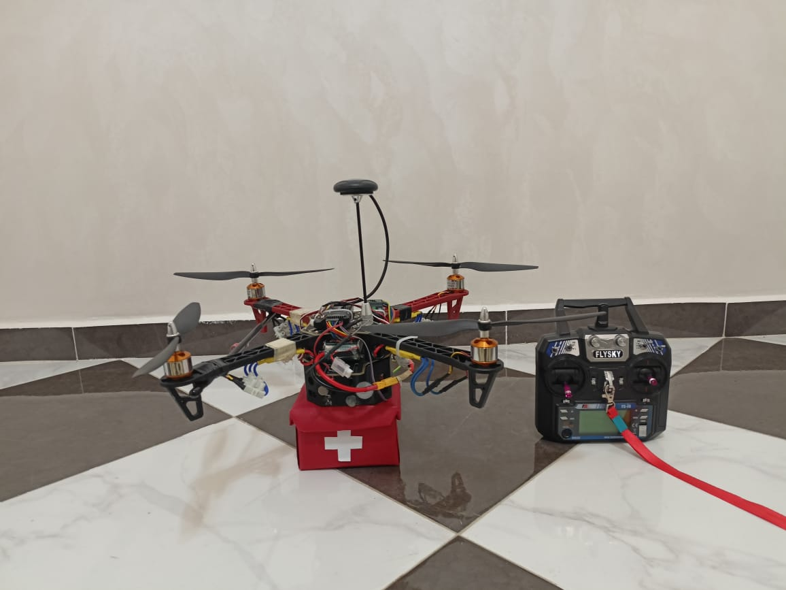

Collecte de données multisources, IA embarquée, traitement vidéo temps réel et supervision cloud
QuakeDrone est une solution embarquée conçue pour repérer des survivants après un séisme. Elle combine collecte de données multisources, analyse par intelligence artificielle, traitement vidéo en temps réel et supervision via une plateforme cloud, pour couvrir rapidement des zones critiques et transmettre les informations de manière fiable, même en conditions réelles.
Le projet repose sur deux plateformes interconnectées :
Collecte de données multisources et transmission via IoT vers le cloud, pour un suivi intelligent de la zone survolée
Traitement vidéo temps réel, détection autonome de personnes embarquée à bord du drone
L'ensemble forme une architecture robuste, évolutive et entièrement temps réel, pensée pour un fonctionnement fiable et sécurisé même en conditions de terrain difficiles.

Vue caméra du drone en vol, avec détection de personnes par IA en temps réel.
Plateforme web de supervision affichant la détection de mouvement en direct.
Démonstration de la stabilité de vol du drone.